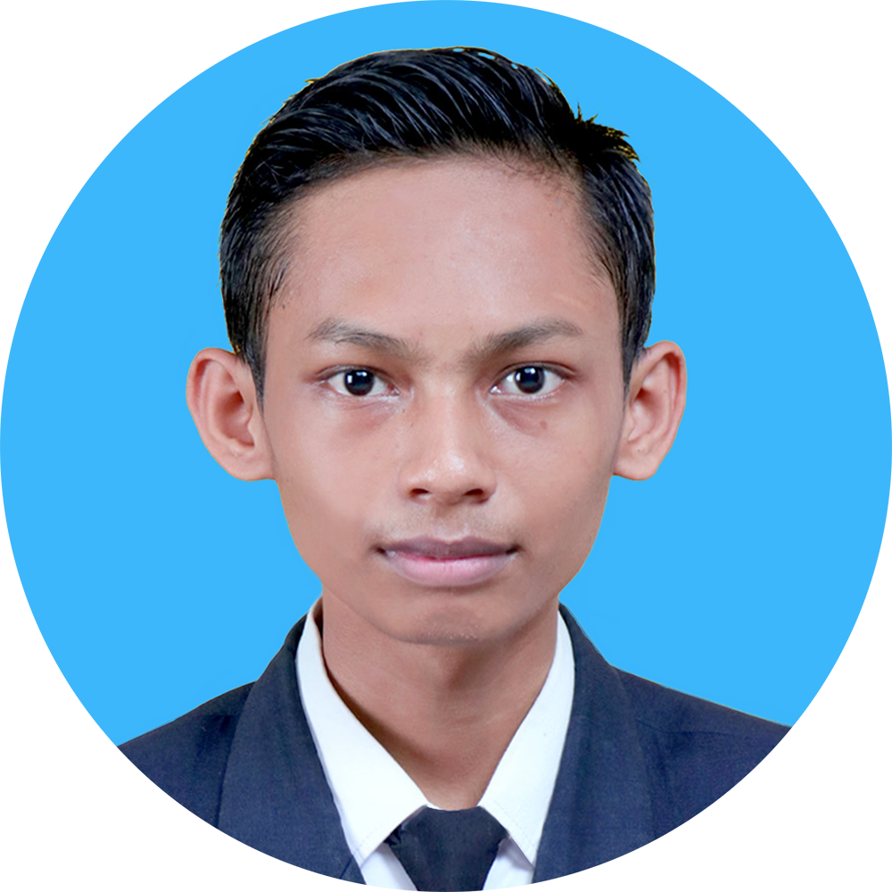

DESKRIPSI DIRI
Saya adalah mahasiswa jurusan Teknologi Informasi di Politeknik Negeri Malang PSDKU Lumajang. Memiliki ketertarikan dalam bidang pemrograman, jaringan, UI/UX, fotografi dan desain grafis. Selama perkuliahan saya aktif mengikuti pembelajaran di kampus dan himpunan jurusan teknologi informasi (HMTI).
PENDIDIKAN
- D3 Teknologi Informasi Politeknik Negeri Malang (2021 - Sekarang)
- SMK Negeri 1 Sumbawa Besar jurusan Multimedia (2017 - 2020)
PENGALAMAN ORGANISASI
Divisi Kominfo Himpunan Mahasiswa Teknologi Informasi (HMTI)
2022 - Sekarang
2022 - Sekarang
Subdivisi Desain Grafis
- Bertugas mendesain konten sosial media HMTI seperti Instagram, Facebook, YouTube, dan lainnya
- Mendokumentasikan setiap acara himpunan seperti rapat rutinan, malam keakraban, pelatikan, dan lainnya